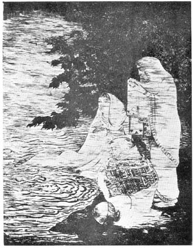
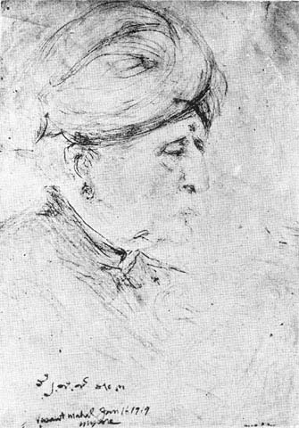

Mukul Dey: Painter-Etcher
BY O. C. GANGOLY
The undue space and emphasis usually given in our daily press to political incidents and happenings have a tendency to put out of focus events of much more serious consequence for the future history of India. Too much sound and energy are wasted in trumpeting the progress of the struggle for political freedom, while very little, if at all anything, is done in the daily press to record the significant facts and incidents which are slowly working out the cultural emancipation of India.
Indeed, it is with some pride that we can recall one auspicious and significant afternoon in December, several years ago, when the writer kept away from a huge pandal, (into which nearly all Calcutta had flocked to listen to the oration of the Congress President) - to steal into a modest little hall, a few hundred feet away, where a handful of lovers of Indian culture had assembled to honour the birth of Modern Indian Art. The little pictures, quite miniature in size, and restrained in their colour schemes, conveyed in their mute eloquence, to those who understand their meaning - a message for a new awakening of life, for a deliverance from the then prevailing orgy of foreignism, in thought and aspiration, for a new spiritual consciousness - in which a group of Indian artists sought, found and expressed their old Indian soul. The little exhibition became an annual event and the movement grew and expanded, creating little centres in all parts of India, and its fame travelled beyond the seas to earn the laurels of foreign appreciation. From the very beginning, the movement has received scant attention from Indians themselves. And even to-day, when Indian Art has become fashionable in some quarters, it is very little understood by Indians themselves. To Gandhi, the spiritual politician, we respectfully bow our obedient assent, - with the call of Tagore, "the poet, we readily mingle our voice to invite the East and the West to meet on the altar of humanity - in Bose, the mystic and mysterious scientist, we readily recognize the rishi of old, easily bridging the gulf between the living and the nonliving, - but the modern Indian Artist leaves us cold. His works are, as yet, a sealed book to many of us. We refuse to look at them, and their messages knock, in vain, on the barred gates of our atrophied sense of Form and Beauty. In fact, Art has no place in our modern life. It is neither an educational force, nor the pastime of our cultured dilettantes. It is certainly a forbidden fruit to our Universities. The third eye of our aesthetic vision, it appears, is not destined to open before the auspicious dawn of political autonomy, and the red-letter day of a cultured Swaraj. In the meantime, the neglected exponent of cultured freedom plies his silent pencils and mute brushes - in the cold neglect of his indifferent contemporaries, - and buries himself in the deep seclusion of his own studio, strenuously striving to save the soul of India from the dusty clouds of political strifes, keeping the flame of Art burning amidst the storms of political controversy, with no help from anybody save the appreciative smiles of friends other than Indians. A Nandalal Bose, a Khitin Mazumdar, a Rama Rao, plods on his weary way, alone and uncared for, holding aloft the high ideals and traditions of his racial art, - one of the richest gifts of India to the spiritual treasures of the world. And the life-work of each of these silent workers for the spiritual destiny of India has a peculiar story to tell. While some of them made it a cult to cut themselves off from any contact with the West, others drank deep at the fountain- heads of the streams of Western Art, and in a broad eclectic spirit took their lessons wherever they found them. Many of them stayed at home, confined within the tariff-walls of Ajantan frescoes and Rajput drawings, while the more adventurous in spirit boldly crossed the seas to finish their education, to broaden their outlook, and to strengthen their native Indian vision by contact with points of view different from their own.
Indian artists who go abroad to finish their art-education seldom return with their personal vision undimmed or untarnished by the dazzling light-rays of the West. And the catastrophe is generally explained by the fact that it is the mediocre or the miniature artist who usually succumbs to the methods of Western Art; for, having no point of view of his own, he can only borrow from others, and his lack of individual vision forces him to an imitation of exotic methods,-not only in language, but also in ideas. To the average run of artists who go abroad, Mukul Dey has proved an honourable, exception, an example which is sure to be of great and significant values. For, he was already an, accomplished artist, with a distinctly native and indigenous outlook, (carefully trained under the inspiring direction of Dr. Abanindranath Tagore), before the call of the West came to him. Indeed his native talent had already developed in unmistakable traits in his masterpiece,- "The Eclipse," one of his earliest water-colours (reproduced, in a later version, in a fine etching) and also in his remarkable series of portrait studies. Indeed, before his sojourn in England, his artistic vision had been trained to react to his own indigenous surroundings, and to forge a definite individual language peculiar to himself - yet shaped by the more fundamental heritage of his race. For he duly paid his homage to the shrines of Ajanta and Bagh, spending months of strenuous apprenticeship in assimilating the language of old Indian Art, the story of which is charmingly related in his volume, My Pilgrimages to Ajanta and Bagh. With all his talents properly disciplined and his vision correctly oriented and attuned to the art of his racial genius, he had nothing to lose and everything to gain by his contact with the West. And this is exactly what has happened.

The Eclipse

Veena Seshanna
From the very beginning, Dey had nursed a burning desire to be an artist in Etching,-a medium of peculiar difficulties, and wholly foreign to the traditions of Indian Art. And it is indeed a marvel that an Indian artist should have mastered an art so truly Western as the dry point. His great success in this, to India, a movel medium, opens a new path for the development of modern Indian Art,- hitherto confined to the somewhat narrow boundaries of water-colour, - a path in which his success will no doubt lead many followers to experiment in moods of new and more adventurous imagination. For, Dey has already given us an earnest of the possibilities, in this medium, of the mystic and imaginative motifs of Indian themes .m his intricate yet entrancing symbolism of "The Sacred Tree." In his brilliant series of portraits we find the artist in another and no less interesting phase. He is indeed a portraitist of great distinction and power. His portraits of Einstein, R. B. Cunningham Graham, W. W. Pearson, and Dr. Rabindranath Tagore display a keen insight for characterization and an eye for essentials which are truly wonderful qualities which were clearly anticipated in his charming and delicate pencil sketch of the famous Southern Indian musician, Seshanna, made many years ago.
Yet on the threshold of his career, Dey is destined to achieve great things, if one may judge from the splendid fruits of his talent gathered in an exhibition recently held at Calcutta,-the first after his return to India to be followed, let us hope, by many more. We hope our welcome to the work of this able pioneer in a new field will be extended in a warm appreciation and response in a practical shape. For it is seldom realised in India, that Art is a delicate plant that only grows with the sweet dews of appreciation, and quickly withers in the arid sands of neglect.